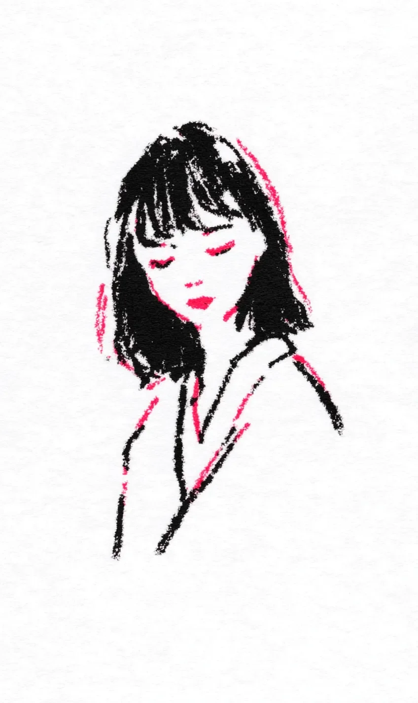

나은은 카페 문을 열고 들어갔다. 커피 향기가 코에 들어왔다. 기분이 좋아졌다. 오늘은 특별한 날이었다.
[Naeun opened the café door and walked in. The smell of coffee reached her nose. Her mood lifted. Today was a special day.]
사실 나은은 어제부터 기대하고 있었다. 어제 저녁, 나은은 침대에 누워서 핸드폰을 보고 있었다. 그런데 인스타그램에서 사진 하나를 발견했다. 아이스 아메리카노 사진이었다. 커피가 정말 아름다웠다. 크고 투명한 유리컵이었다. 얼음이 반짝반짝했다. 빛이 유리잔 안에서 춤을 췄다. 나은은 사진을 두 번 봤다. 그리고 저장했다. 그리고 세 번 더 봤다. “나도 내일 꼭 마셔야지.”
[Actually, Naeun had been looking forward to this since yesterday. The night before, she was lying in bed scrolling through her phone. Then she found a photo on Instagram. An iced Americano. The coffee was truly beautiful. A large, clear glass. The ice sparkled. Light danced inside the glass. Naeun looked at the photo twice. She saved it. Then looked three more times. “I have to drink that tomorrow.”]
나은은 카운터 앞에 섰다. 메뉴판을 봤다. 사실 이미 다 결정했다. “아이스 아메리카노 한 잔 주세요.”
[Naeun stood at the counter. She looked at the menu. She had already decided. “One iced Americano, please.”]
나은은 카페 안을 둘러봤다. 창가 자리에 빛이 잘 들어왔다. 완벽했다. 나은은 창가 자리에 앉았다. 핸드폰을 꺼냈다. 카메라를 열었다. 각도를 미리 연습했다. 준비 완료.
[Naeun looked around the café. Light came in nicely by the window. Perfect. She sat by the window. Took out her phone. Opened the camera. Practiced angles in advance. Ready.]
“아이스 아메리카노입니다.”
[”Your iced Americano.”]
나은은 커피를 봤다.
[Naeun looked at the coffee.]
그냥... 커피였다. 검은 커피에 얼음 몇 개. 예쁘지 않았다. 어제 인스타그램 사진이랑 전혀 달랐다.
[Just... coffee. Black coffee with a few pieces of ice. Not pretty. Nothing like the Instagram photo from yesterday.]
나은은 잠깐 실망했다. 하지만 포기할 수 없었다.
[Naeun was disappointed for a moment. But she couldn’t give up.]
나은은 핸드폰을 들었다. 사진을 찍었다. 별로였다. 다시 찍었다. 더 별로였다. 커피잔을 오른쪽으로 옮겼다. 다시 찍었다. 왼쪽으로 옮겼다. 또 찍었다. 테이블 위의 냅킨을 커피잔 옆에 놓았다. 더 예뻐 보일 것 같았다. 찍었다. 더 별로였다. 냅킨을 다시 치웠다. 나은은 자리에서 일어났다. 위에서 찍었다. 다시 앉았다. 옆에서 찍었다. 마지막으로 테이블 아래에서도 찍어 봤다.
[Naeun picked up her phone. Took a photo. Not great. Took it again. Even worse. She moved the cup to the right. Another photo. Moved it to the left. Another. She placed the napkin next to the cup. It might look prettier. Took a photo. Even worse. She removed the napkin. Naeun stood up. Took one from above. Sat back down. One from the side. Finally, she tried one from under the table too.]
옆 테이블 남자가 나은을 보고 있었다.
[The man at the next table was watching Naeun.]
나은은 모른 척했다.
[Naeun pretended not to notice.]
그때 직원이 지나가다가 멈췄다. “손님, 혹시 뭔가 불편하세요?”
[Just then, a staff member stopped beside her. “Excuse me, is something wrong?”]
나은은 벌떡 일어서며 소리쳤다. “아니요! 커피 완전 맛있어요! 진짜요!”
[Naeun jumped to her feet and shouted. “No! The coffee is amazing! Really!”]
카페 안이 조용해졌다. 모든 사람이 나은을 봤다.
[The café went quiet. Everyone looked at Naeun.]
직원은 미소를 지으며 걸어갔다. 옆 테이블 남자는 웃음을 참고 있었다.
[The staff member smiled and walked away. The man at the next table was holding back a laugh.]
나은은 천천히 앉았다. 귀부터 목까지 다 빨개졌다. 핸드폰으로 얼굴을 가렸다.
[Naeun slowly sat down. From her ears to her neck, everything turned red. She covered her face with her phone.]
나은은 깊게 숨을 쉬었다. 가장 괜찮은 사진을 골랐다. 필터를 추가했다. 밝기를 올렸다. 설명을 썼다. “오늘도 나만의 시간 ☕” 그리고 올렸다.
[Naeun took a deep breath. She chose the best photo. Added a filter. Increased the brightness. Wrote a caption. “My own little time today ☕” And posted it.]
나은은 핸드폰을 내려놓았다. 바로 다시 들었다. 좋아요가 없었다. 내려놓았다. 다시 들었다. 여전히 없었다. 또 내려놓았다. 또 들었다. 좋아요 하나. 엄마였다. 잠깐 기다렸다. 좋아요 둘. 이모였다. 또 기다렸다. 좋아요 셋. 엄마의 친구 최 아줌마였다.
[Naeun put her phone down. Immediately picked it up again. No likes. Put it down. Picked it up. Still none. Put it down. Picked it up. One like. It was Mom. She waited. Two likes. Her aunt. She waited again. Three likes. Mom’s friend, Auntie Choi.]
나은은 핸드폰을 가방 안에 깊이 넣었다.
[Naeun put her phone deep inside her bag.]
그리고 마침내 커피를 한 모금 마셨다.
[And finally, she took a sip of the coffee.]
맛있었다. 진짜로.
[It was delicious. Really.]
나은은 빈 컵을 내려다봤다. 잠깐 생각했다. 그리고 천천히 일어나 카운터로 걸어갔다.
[Naeun looked down at the empty cup. She thought for a moment. Then slowly stood up and walked to the counter.]
“아이스 아메리카노 한 잔 더 주세요.”
[”One more iced Americano, please.”]